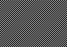
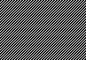
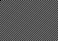
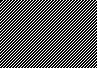
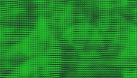
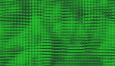
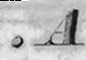
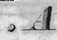

ExternalLibraries
Last modified: May 17, 2022
Contents
Numpy
from_numpy
Image [OneBit|GreyScale|Grey16|RGB|Float|Complex] from_numpy (object array)
| Returns: | Image [OneBit|GreyScale|Grey16|RGB|Float|Complex] |
|---|---|
| Category: | ExternalLibraries/Numpy |
| Defined in: | numpy_io.py |
| Author: | Robert Butz based on code by Alex Cobb |
Instantiates a Gamera image from a Numeric multi-dimensional array array.
The array must be one of the following types and will map to the corresponding Gamera image type:
| Gamera type | Numpy type |
|---|---|
| RGB | uint8 (on 3 planes) |
| GREYSCALE | uint8 |
| GREY16 | uint32 |
| ONEBIT | uint16 |
| FLOAT | float64 |
| COMPLEX | complex128 |
Requires two copying operations; may fail for very large images.
To use this function, which is not a method on images, do the following:
from gamera.plugins import numpy_io
image = numpy_io.from_numpy(array)
to_numpy
object to_numpy ()
| Operates on: | Image [OneBit|GreyScale|Grey16|RGB|Float|Complex] |
|---|---|
| Returns: | object |
| Category: | ExternalLibraries/Numpy |
| Defined in: | numpy_io.py |
| Author: | Robert Butz based on code by Alex Cobb |
Returns an Numeric array containing a copy of the image's data.
The array will be one of the following types corresponding to each of the Gamera image types:
| Gamera type | Numeric type |
|---|---|
| RGB | uint8 (on 3 planes) |
| GREYSCALE | uint8 |
| GREY16 | uint32 |
| ONEBIT | uint16 |
| FLOAT | float64 |
| COMPLEX | complex128 |
Requires three copies, and may fail for very large images.
This method can be used for utilizing special functions present in numpy. If you need to compute the discrete fourier transform of an image, you can use numpy, as in the following example:
from gamera.plugins import numpy_io
from numpy import fft
nparr = image.to_numpy()
fourarr = fft.fft2(nparr)
fourimage = numpy_io.from_numpy(fourarr)
Example 1: to_numpy

Example 2: to_numpy

Example 3: to_numpy

Example 4: to_numpy
 

Example 5: to_numpy
 

PIL
from_pil
Image [GreyScale|RGB|Float] from_pil (object image)
| Returns: | Image [GreyScale|RGB|Float] |
|---|---|
| Category: | ExternalLibraries/PIL |
| Defined in: | pil_io.py |
| Author: | Alex Cobb |
Instantiates a Gamera image from a Python Imaging Library image image.
Only RGB or 8-bit greyscale mode PIL images are supported. Requires a copying operation; may fail for very large images.
This can, e.g., be used to read images from file formats not directly supported by gamera, as JPEG images:
# Beware: name "Image" is already used in Gamera!
import Image as Pil
from pil_io import
# read a JPEG image and convert it to a Gamera image
pilimg = Pil.open("image.jpg")
img = from_pil(pilimg)
to_pil
object to_pil ()
| Operates on: | Image [RGB|GreyScale] |
|---|---|
| Returns: | object |
| Category: | ExternalLibraries/PIL |
| Defined in: | pil_io.py |
| Author: | Alex Cobb |
Returns a Python Imaging Library image containing a copy of image's data.
Only RGB and Greyscale images are supported. May fail for very large images.
Example 1: to_pil
 

Example 2: to_pil
 

_from_raw_string
Image [OneBit|GreyScale|Grey16|RGB|Float|Complex] _from_raw_string (Point offset, Dim dim, int pixel_type, int storage_type, object data_string)
| Returns: | Image [OneBit|GreyScale|Grey16|RGB|Float|Complex] |
|---|---|
| Category: | ExternalLibraries |
| Defined in: | string_io.py |
| Author: | Alex Cobb |
Instantiates an image from binary data in a Python string.
Requires a copying operation; may fail for very large images.
This function is not intended to be used directly. To move data to/from Numeric/numarray/PIL, use the functions in numeric_io.py, numarray_io.py and pil_io.py respectively.
_to_raw_string
object _to_raw_string ()
| Operates on: | Image [OneBit|GreyScale|Grey16|RGB|Float|Complex] |
|---|---|
| Returns: | object |
| Category: | ExternalLibraries |
| Defined in: | string_io.py |
| Author: | Alex Cobb |
Returns the image's binary data as a Python string.
Requires a copying operation; may fail for very large images.
This function is not intended to be used directly. To move data to/from Numeric/numarray/PIL, use the functions in numeric_io.py, numarray_io.py and pil_io.py respectively.
cv
from_cv
Image [GreyScale|RGB|Float] from_cv (object image)
| Returns: | Image [GreyScale|RGB|Float] |
|---|---|
| Category: | ExternalLibraries/cv |
| Defined in: | cv_io.py |
| Author: | Manuel Jeltsch |
Instantiates a Gamera RGB image from an OpenCV cv.cvmat or cv.iplimage. May fail for very large images.
Usage example:
from gamera.plugins import cv_io
# read a JPEG image and convert it to a Gamera image
cvImg = cv.LoadImage("foo.jpg")
img = cv_io.from_cv(cvImg)
to_cv
object to_cv ()
| Operates on: | Image [RGB|GreyScale|OneBit] |
|---|---|
| Returns: | object |
| Category: | ExternalLibraries/cv |
| Defined in: | cv_io.py |
| Author: | Manuel Jeltsch |
Returns an OpenCv image (cv.cvmat) containing a copy of image's data.
Only RGB, Greyscale and Onebit images are supported. May fail for very large images.
to_buffer
to_buffer (object Buffer)
| Operates on: | Image [OneBit|GreyScale|Grey16|RGB|Float|Complex] |
|---|---|
| Category: | ExternalLibraries |
| Defined in: | gui_support.py |
| Author: | Michael Droettboom and Karl MacMillan |
Encodes the image into a 'buffer' required by wx.Image. (i.e. 8-bit RGB triplets). If you need to convert a gamera image scaled_image to a wx.Bitmap, you can do so as follows:
wximg = wx.EmptyImage(scaled_image.ncols, scaled_image.nrows)
scaled_image.to_buffer(wximg.GetDataBuffer())
wxbmp = wx.BitmapFromImage(wximg)